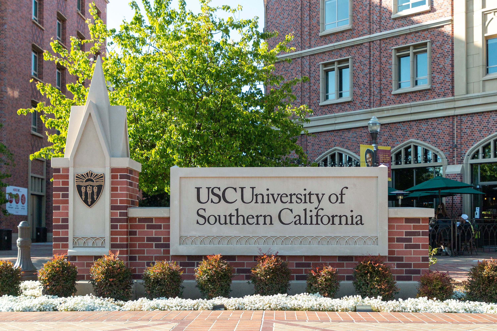

In 2006, I started attending elementary school in my hometown, Nanjing city, in China. The school is called Nanjing Ruijinlu Elementary School and it held some of my best childhood memories during the six years I was there.
At school, I studied Chinese, Math, English, and Science. After school, I played soccer with my friends till sunset.

In 2013, I moved to Toronto Canada and started attending a local school called The York School as an 8th grader. The school offered MYP curriculum from Grade 8 to Grade 10, and IB curriculumn for Grade 11 and Grade 12. Some of my most memorable experiences there include being the head of Investment Club, serving as a mentor, playing on the varisity badminton and basketball team, and going on a school service trip to India.

In 2018, I got accepted into University of Southern California, Marshall School of Business. At Marshall, I developed many of my soft skills, such as communication, problem-solving, and teamwork. In one of the electives I took, CSCI102, I discovered my passion for computer science. Now I am a Computer Science and Business Administration (CSBA) student, looking to becoming a software engineer.